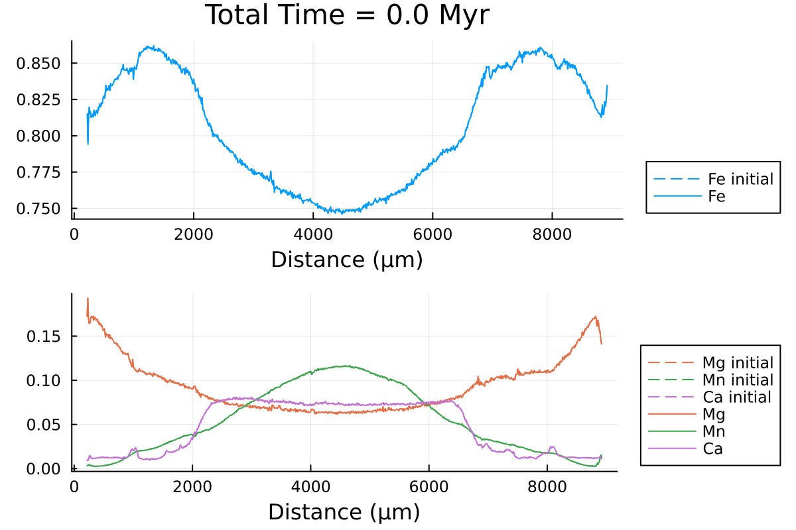

DiffusionGarnet.jl
Garnet is a mineral commonly used in metamorphic petrology to better understand geological processes as it is present in various different rock types. This mineral commonly shows a wide spread of compositional zoning that has been interpreted as recording ranges of pressure (P) and temperature (T) conditions. Modelling diffusion processes can help to better understand this zoning and better constrain the pressure-temperature-time (PTt) conditions of the metamorphic event of interest.
DiffusionGarnet is a Julia package that can be used to model coupled diffusion of major elements on real garnet data. It currently supports 1D and spherical coordinates for evenly spaced data and is soon to be extended to support 2D and 3D coordinates.
Installation
DiffusionGarnet may be installed directly with the Julia package manager from the REPL:
julia>]
pkg> add DiffusionGarnet
pkg> test DiffusionGarnetQuick Start
DiffusionGarnet requires input data for the initial Mg, Fe and Mn mass fractions.
# load the data of your choice (here from the text file located in https://github.com/Iddingsite/DiffusionGarnet.jl/tree/main/examples/1D, place it in the same folder as where you are running the code)
data = DelimitedFiles.readdlm("./Data_Grt_1D.txt", '\t', '\n', header=true)[1]
Mg0 = data[:, 4]
Fe0 = data[:, 2]
Mn0 = data[:, 3]
Ca0 = data[:, 5]
distance = data[:, 1]
Lx = (data[end,1] - data[1,1])u"µm" # length in x of the model
tfinal = 15u"Myr" # total time of the model
# define the initial conditions in 1D of your problem
IC1D = InitialConditions1D(Mg0, Fe0, Mn0, Lx, tfinal)
# define the PT conditions
T = 900u"°C"
P = 0.6u"GPa"
# define a Domain struct containing the definition of your problem
domain1D = Domain(IC1D, T, P)
# solve the problem using DifferentialEquations.jl
sol = simulate(domain1D)
# you can now plot the solutions from the sol variable
# extract characteristic time to convert back to dimensional time
@unpack tfinal_ad, t_charact = domain1D
anim = @animate for i = LinRange(0, tfinal_ad, 100)
l = @layout [a ; b]
p1 = plot(distance, Fe0, label="Fe initial", linestyle = :dash, linewidth=1, dpi=200, title = "Timestep = $(round(((i)* t_charact);digits=2)) Ma", legend=:outerbottomright, linecolor=1,xlabel = "Distance (µm)")
p1 = plot!(distance, sol(i)[:,2], label="Fe",linecolor=1, linewidth=1)
p2 = plot(distance, Mg0, label="Mg initial", linestyle = :dash, linewidth=1, dpi=200,legend=:outerbottomright,linecolor=2,xlabel = "Distance (µm)")
p2 = plot!(distance, Mn0, label="Mn initial", linestyle = :dash, linewidth=1, linecolor=3)
p2 = plot!(distance, Ca0, label="Ca initial", linestyle = :dash, linewidth=1, linecolor=4)
p2 = plot!(distance, sol(i)[:,1], label="Mg",linecolor=2, linewidth=1)
p2 = plot!(distance, sol(i)[:,3], label="Mn", linecolor=3, linewidth=1)
p2 = plot!(distance, 1 .- sol(i)[:,1] .- sol(i)[:,2] .- sol(i)[:,3], label="Ca", linecolor=4, linewidth=1)
plot(p1, p2, layout = l)
end every 1
println("Now, generating the gif...")
gif(anim, "./Grt_1D_test.gif", fps = 7)
println("...Done!")Here is the resulting gif obtained:

It represents the compositional evolution of a 1D profil through a garnet grain with homogeneous dirichlet boundaries on both sides.